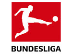

분데스리가(Bundes Liga)
분데스리가(Bundes Liga)는 독일의 최상위 프로축구 리그로, 유럽을 대표하는 축구 명문 리그 중 하나. 독일 축구 리그(Deutsche Fußball Liga)가 운영하고 독일 축구 연맹(Deutscher Fußball-Bund)과 리가페르반트(Die Liga – Fußballverband) 에서 주관하는 축구 리그이며. 독일의 축구리그 중 최상위리그이다. 이들이 곧 독일 국가대표팀이라 해도 과언이 아니다.
비싼 선수들을 무리해서 영입하기 보다는 유스 팀에 많이 투자하여 뛰어난 선수를 육성, 자급하는 것으로 유명하다. 2000년대 초반 유로에서 광탈하고, 잉글랜드에게 홈에서 5-1로 대패하는 비극 등을 겪은 후 분데스리가 전체에서 유소년 육성에 심혈을 기울였다.